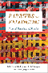

Browse
other Author lists:
A B C
D E F
G H I
J K L
M N O
P Q R
S T U
V W X
Y Z |
|
Cara
Growing with a Retarded Child
Jablow,
Martha Moraghan
250 pp • Spring 1982
paper 978-0-87722-269-9
cloth 978-0-87722-255-2 |

|
Pictures from a Drawer
Prison and the Art of Portraiture
Jackson, Bruce
192 pp • 7x10 • Spring 2009
paper 978-1-59213-949-1
cloth 978-1-59213-948-4
|
|
The Story Is True
The Art and Meaning of Telling Stories
Jackson, Bruce
256 pp • 5.5x8.25 • Spring 2007
paper 978-1-59123-607-0
cloth 978-1-59123-606-3
|
 |
Model City Blues
Urban Space and Organized Resistance in New Haven
Jackson, Mandi Isaacs
296 pp • 6x9 • Spring 2008
paper 978-1-59213-604-9
cloth 978-1-59213-603-2
|
 |
Transformations of Warfare in the Contemporary World
edited by Torpey, John and David Jacobson
192 pp • 5.5x8.25 • Spring 2016
paper 978-1-4399-1313-0
cloth 978-1-4399-1312-3
|
 |
How to Be South Asian in America
Narratives of Ambivalence and Belonging
jain, anupama
288 pp • 6x9 • Spring 2011
paper 978-1-4399-0303-2
cloth 978-1-4399-0302-5
|
|
The
Sons and Daughters of Los
Culture and Community in L.A.
edited
by James, David E.
264 pp • 7x10 • Spring 2003
paper 978-1-59213-013-9
cloth 978-1-59213-012-2
|
|
Public
Dollars for Private Schools
The Case of Tuition Tax Credits
edited
by James, Thomas and Henry M. Levin
285 pp • Fall 1983
paper 978-0-87722-386-3
cloth 978-0-87722-316-0 |
|
Rethinking
College Athletics
edited
by Andre, Judith and David N. James
257 pp • 6x9 • Fall 1990
paper 978-1-56639-002-6
cloth 978-0-87722-716-8
|
 |
Stan
Brakhage
Filmmaker
edited
by James, David E.
248 pp • 6x9 • Spring 2005
paper 978-1-59213-272-0
cloth 978-1-59213-271-3
|
 |
Sisterhood
Denied
Race, Gender, and Class in a New South Community
Janiewski,
Dolores E.
272 pp • 6x9 • Fall 1984
paper 978-1-56639-006-4
cloth 978-0-87722-361-0 |
 |
We
the People
Young,
Alfred F. and Terry J. Fife with Mary E. Janzen
265 pp • 10x8 • Fall 1992
paper 978-0-87722-938-4
cloth 978-0-87722-937-7 |

|
Barriers and Belonging
Personal Narratives of Disability
edited
by Jarman, Michelle, Leila Monaghan, and Alison Quaggin Harkin
286 pp • Fall 2016
paper 978-1-4399-1388-8
cloth 978-1-4399-1387-1 |
 |
Sound
Tracks
A Musical ABC, Volumes 1-3
Jarrett,
Michael
304 pp • 5.5x9 • Fall 1998
cloth 978-1-56639-641-7
|

|
Phil Jasner "On the Case"
His Best Writing on the Sixers, the Dream Team, and Beyond
edited by Jasner, Andy
264 pp • 6x9 • Fall 2017
cloth 978-1-4399-1494-6 |
|
The Identity Dilemma
Social Movements and Collective Identity
edited by McGarry, Aidan and James M. Jasper
238 pp • 6x9 • Spring 2015
paper 978-1-4399-1252-2
cloth 978-1-4399-1251-5 |
 |
Telling Young Lives
Portraits of Global Youth
edited by Jeffrey, Craig, and Jane Dyson
232 pp • 6x9 • Fall 2008
paper 978-1-59213-931-6
cloth 978-1-59213-930-9
|
 |
Yo'
Mama!
New Raps, Toasts, Dozens, Jokes and Children's Rhymes from Urban
Black America
edited
by Jemie, Onwuchekwa
344 pp • 6x9 • Spring 2003
paper 978-1-59213-029-0
cloth 978-1-59213-028-3
|
 |
Mothers, Daughters, and Political Socialization
Two Generations at an American Women's College
Jenkins, Krista
178 pp • 6x9 • Spring 2013
paper 978-1-4399-0928-7
cloth 978-1-4399-0927-0 |
 |
My Culture, My Color, My Self
Heritage, Resilience, and Community in the Lives of Young Adults
Jenkins, Toby S.
204 pp • 6x9 • Spring 2013
paper 978-1-4399-0830-3
cloth 978-1-4399-0829-7 |
 |
A
Needle, a Bobbin, a Strike
Women Needleworkers in America
edited
by Jensen, Joan M. and Sue Davidson
256 pp • Fall 1984
paper 978-0-87722-407-5
cloth 978-0-87722-340-5 |
 |
Swingin'
at the Savoy
The Memoir of a Jazz Dancer
Miller,
Norma with Evette Jensen
304 pp • 6x9 • Spring 2001
paper 978-1-56639-849-7
|
 |
The
Challenge of Restructuring
North American Labor Movements Respond
edited
by Jenson, Jane and Rianne Mahon
488 pp • 6x9 • Fall 1992
cloth 978-0-87722-981-0 |
 |
The
Regulation of Sexuality
Experiences of Family Planning Workers
Joffe,
Carole
208 pp • Fall 1987
paper 978-0-87722-510-2
cloth 978-0-87722-423-5 |

|
Leonard
Covello and the Making of Benjamin Franklin High School
Education as if Citizenship Mattered
Johanek, Michael C. and John L. Puckett
384 pp • 6x9 • Fall 2006
cloth 978-1-59213-521-9
|
 |
The
Gender Knot
Unraveling Our Patriarchal Legacy
Third Edition
Johnson,
Allan G.
322 pp • 6x9 • Fall 2014
paper 978-1-43991-184-6
cloth 978-1-43991-183-9 |
 |
The
Forest and the Trees
Sociology as Life, Practice, and Promise
Third Edition
Johnson,
Allan G.
198 pp • 6x9 • Fall 2014
paper 978-1-43991-187-7
cloth 978-1-43991-186-0 |

|
Not from Here
A Memoir
Johnson, Allan G.
186 pp • 5.5x8.25 • Spring 2015
cloth 978-1-4399-1245-4 |

|
Objectifying Measures
The Dominance of High-Stakes Testing and the Politics of Schooling
Johnson, Amanda Walker
222 pp • 5.5x8.25 • Spring 2009
paper 978-1-59213-906-4
cloth 978-1-59213-905-7
|
|
Just Queer Folks
Gender and Sexuality in Rural America
Johnson, Colin R.
264 pp • 6x9 • Spring 2013
paper 978-1-4399-0998-0
cloth 978-1-4399-0997-3 |
 |
The
"Huddled Masses" Myth
Immigration and Civil Rights
Johnson,
Kevin R.
264 pp • 6x9 • Fall 2003
paper 978-1-59213-206-5
cloth 978-1-59213-205-8
|
|
How
Did You Get to Be Mexican?
A White/Brown Man’s Search for Identity
Johnson,
Kevin R.
264 pp • 6x9 • Fall 1999
paper 978-1-56639-651-6
cloth 978-1-56639-650-9
|

|
Knowledge for Social Change
Bacon, Dewey, and the Revolutionary Transformation of Research Universities in the Twenty-First Century
Benson, Lee, Ira Harkavy, John Puckett, Matthew Hartley, Rita A. Hodges, Francis E. Johnston, and Joann Weeks
206 pp • 6x9 • Spring 2017
paper 978-1-4399-1519-6
cloth 978-1-4399-1518-9
|
 |
New
Social Movements
From Ideology to Identity
edited
by Laraña, Enrique, Hank Johnston and Joseph R. Gusfield
368 pp • 6x9 • Fall 1994
paper 978-1-56639-187-0
cloth 978-1-56639-186-3
|
 |
Technological Turf Wars
A Case Study of the Computer Antivirus Industry
Johnston, Jessica
232 pp • 5.5x8.25• Fall 2008
paper 978-1-59213-882-1
cloth 978-1-59213-881-4
|
 |
Why
Women are Oppressed
Jónasdóttir,
Anne G., foreword by Kathleen B. Jones
312 pp • 6x9 • Fall 1993
paper 978-1-56639-111-5
cloth 978-1-56639-110-8
|
 |
Pop
Music and the Press
edited
by Jones, Steve
288 pp • 6x9 • Fall 2002
paper 978-1-56639-966-1
cloth 978-1-56639-965-4
|
 |
Accent
on Privilege
English Identities and Anglophilia in the U.S.
Jones,
Katharine W.
304 pp • 6x9 • Fall 2001
paper 978-1-56639-901-2
cloth 978-1-56639-900-5
|
|
Why
Women are Oppressed
Jónasdóttir,
Anne G., foreword by Kathleen B. Jones
312 pp • 6x9 • Fall 1993
paper 978-1-56639-111-5
cloth 978-1-56639-110-8
|
|
Professions
and the State
Expertise and Autonomy in the Soviet Union and Eastern Europe
edited
by Jones, Anthony
256 pp • Spring 1991
cloth 978-0-87722-801-1 |

|
Latino Lives in America
Making It Home
Fraga, Luis R., John A. Garcia, Rodney E. Hero, Michael Jones-Correa, Valerie Martinez-Ebers, and Gary Segura
224 pp • 5.5x8.25 • Spring 2010
paper 978-1-43990-049-9
cloth 978-1-43990-048-2
|
 |
Poems
Performance Pieces Proses Plays Poetics
Schwitters,
Kurt, edited by Jerome Rothenberg, translated by Pierre Joris
288 pp • 7x10 • Spring 1993
paper 978-1-56639-264-8
cloth 978-0-87722-894-3 |
 |
Sonic Spaces of the Karoo
The Sacred Music of a South African Coloured Community
Jorritsma, Marie 224 pp • 6x9 • Spring 2011
cloth 978-1-4399-0237-0 |
 |
Peace
Politics
The United States Between Old and New World Orders
Joseph,
Paul
312 pp • 6x9 • Spring 1993
paper 978-1-56639-023-1
cloth 978-1-56639-022-4 |
 |
Wheelchair Warrior
Gangs, Disability, and Basketball
Juette, Melvin and Ronald J. Berger
192 pp • 5.5x8.25 • Spring 2008
paper 978-1-59213-475-5
cloth 978-1-59213-474-8
|
 |
Intimacy across Borders
Race, Religion, and Migration in the U.S. Midwest
Juffer, Jane
204 pp • 5.5x8.25 • Spring 2013
paper 978-1-4399-1053-5
cloth 978-1-4399-1052-8
|
 |
Chaos
on the Shop Floor
A Worker's View of Quality, Productivity, and Management
Juravich,
Tom
160 pp • Spring 1985
paper 978-0-87722-561-4
cloth 978-0-87722-375-7 |